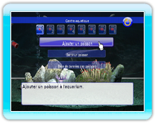

14 |
Mode centre aquatique |
 |
|
Vous pouvez laisser ou prendre un poisson, ou voir la base de données des poissons.
Sélectionnez le poisson que vous désirez mettre dans l'aquarium. Vous ne pouvez pas mettre de poisson si l'aquarium est plein ou trop petit. Vous pouvez aussi obtenir des poissons en acquérant du contenu additionnel.
Retirez un poisson pour le renvoyer au centre aquatique. Leur croissance sera remise par défaut.
Regardez les caractéristiques et les informations des différents poissons.
Vous ne pouvez pas consulter les informations sur les poissons "???". |
 |
 |
 |